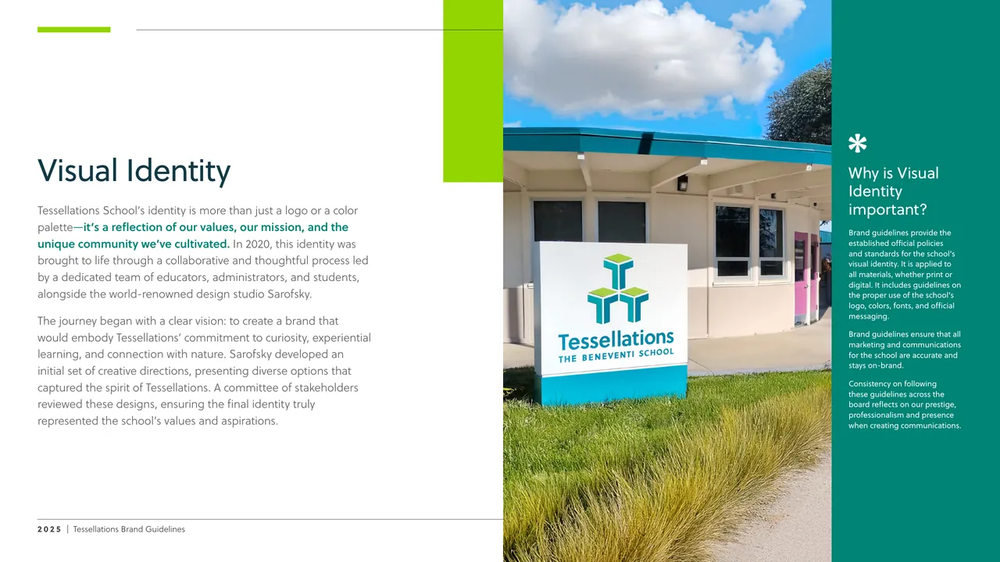
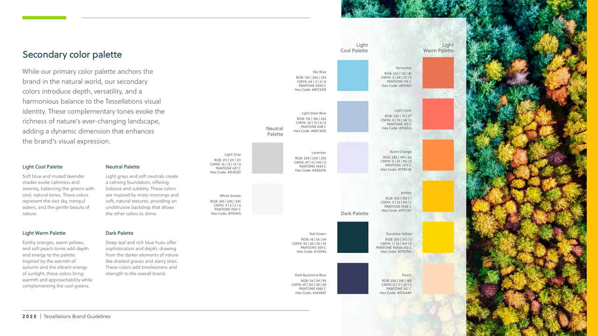
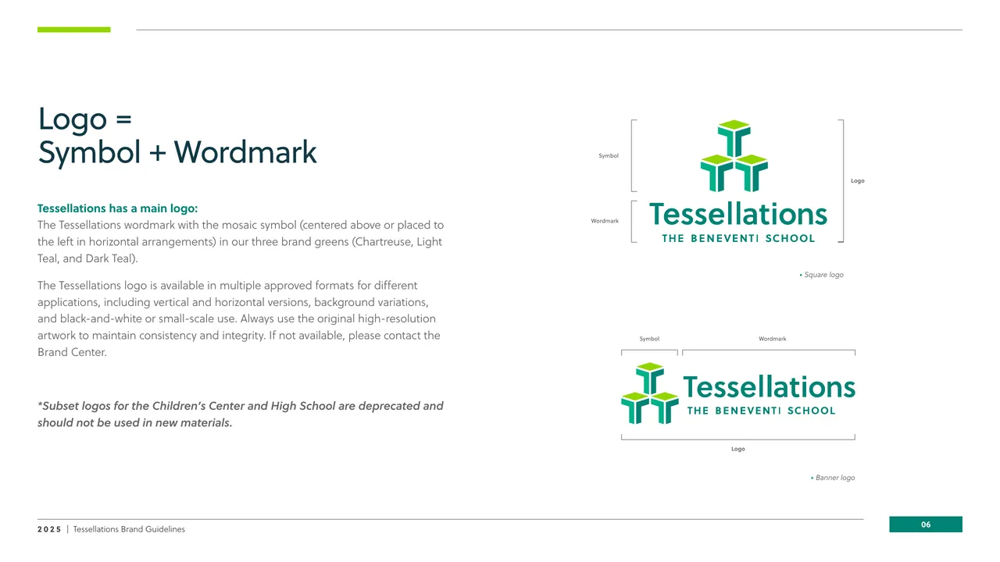
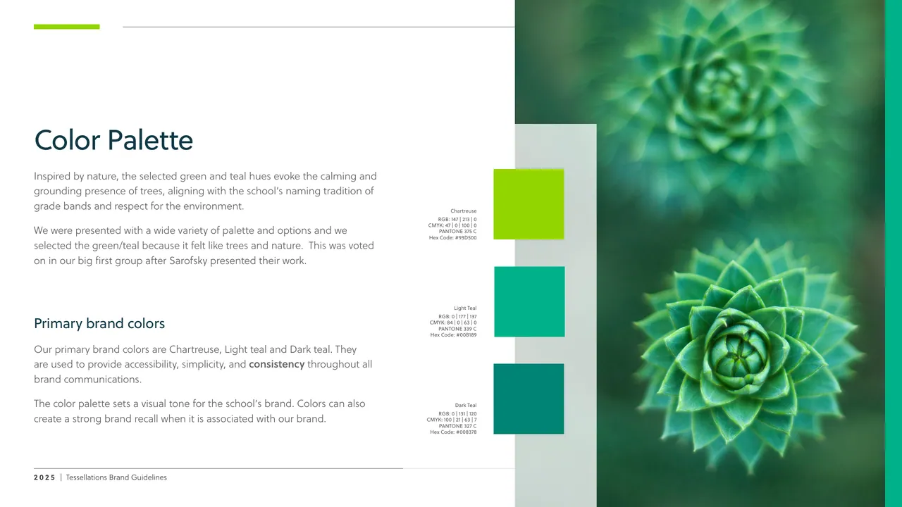
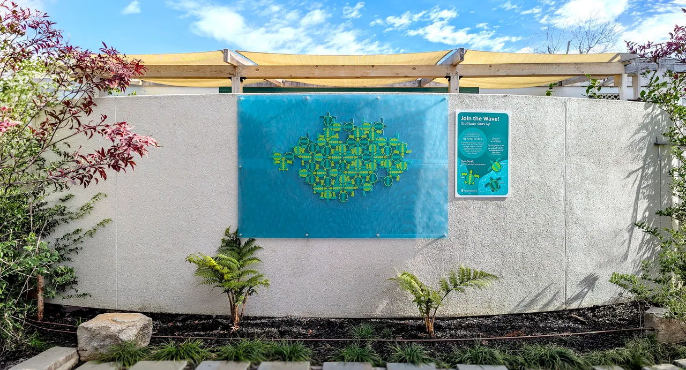

Brand Systems & Creative Leadership
Tessellations: Building the Brand
Tessellations is an independent school in Cupertino for gifted learners. As its Director of Marketing & Communications, I lead the brand: how it looks, how it sounds, and how every division and audience meets it.
This page follows that work from the system underneath to the campaigns built on top of it.
- Role
- Director of Marketing & Communications
- Client
- Tessellations, The Beneventi School
- Years
- 2024–Present
- Identity
- Logo, primary palette and typefaces: Sarofsky, 2020
- Brand guidelines
- Secondary palette, logo rules, voice and tone: Monica Vazquez, 2025
Brand System
From an identity to a working system
Brand guidelines, 2025
Tessellations came with a strong identity: a logo, three primary greens and a typeface, developed with the design studio Sarofsky in 2020. What it didn’t have was a system for using them.
In 2025 I wrote and designed the school’s first brand guidelines and built what was missing: logo rules, a four-part secondary palette, and a voice and tone for every division and audience.
The 2025 guidelines
Tessellations had an identity. This is the system around it: how the logo, color and voice work together, written so anyone at the school can use it.
Cover
One logo, clearly defined
The logo is a symbol plus a wordmark. The page names its parts and approved versions, and retires the older subset logos.
Logo
Room to breathe
Clearspace is set from the symbol, and a minimum size keeps the logo legible in print and on screen.
Clearspace and minimum size
Logo rules anyone can follow
Clearspace, a minimum size and a page of don’ts turn the logo from an artwork into a set of habits. Shorthand versions give tight spots, like avatars and signage, an approved mark, so nobody has to improvise.
Logo don’ts
Shorthand versions
Simplified marks for tight places like email signatures and social profile photos.
Shorthand versions
Three primary greens
Chartreuse, Light Teal and Dark Teal come from the school’s identity and anchor everything else in the system.
Primary palette
A secondary palette with a job
The three primary greens carry the brand, but they can’t do everything. I built four secondary groups: light cool, light warm, neutral and dark. A poster, a slide and a social tile can each find their color and still read as one school.
Secondary palette
A voice for the school
Imaginative, empathetic and confident, tied back to the school’s values.
Voice and tone
One voice, tuned by audience
Tone shifts across contexts, from general and promotional to internal, and adjusts for parents, students and community. I also developed the divisional differentiators, so Preschool, TK, Primary and Middle each sound like themselves while staying one school.
Tone in context
Messaging architecture
Three brand pillars sit above a voice tuned for each active division and a tone for each channel. One message system, consistent across audiences.
Messaging architecture
Design System
Ten principles, one flower
Beneventi 10, 2025
Beneventi 10 are the ten principles that guide how Tessellations educates gifted learners. To make them clear and memorable, I designed a visual system: a ten-petal flower where each principle has its own color and number, and a family of banners that carries it onto slides, posters, folders and signage.
The system, at wall scale
The flower and colors work from slide to wall. On the poster the ten principles read as a list in their own colors, under the school’s mark. The same system carries into an admissions folder and signage.
Beneventi 10 poster
A shorthand for the whole philosophy
Each banner stands for one principle. In a slide’s margin it tells the reader which principle is at play without anyone writing it out, and when the headline names the principle, its color picks up the banner’s.
Banner and headline usage
Built for people who aren’t designers
The deck is the system’s instruction manual. One banner per slide, a headline that matches it, a short list of don’ts. A teacher with a slide template can use it correctly without calling me.
One banner per slide
The system in use
On a content slide the banner sits in the margin and the headline takes its color. Here, banner 04 and an orange headline tell the reader this is about intellectual play, before they read a word.
The principle in practice
A rule for the exceptions
Some content spans two principles, so banners can pair up. More than four and the full flower takes over. That discipline keeps a slide from turning into confetti.
Special cases
Identity & Fundraising
An identity for giving
Tessie Annual Fund, 2025
The Annual Fund needed an identity of its own that still belonged unmistakably to Tessellations. Working as a team of one, I took it from a blank page to a finished campaign: visual metaphors, a vocabulary, then one mark and one line, “Cultivating the Full Potential of Gifted Youth.” I designed the identity and the collateral it lives on, from the pin to the website plan.
The brief
One identity and one tagline for the Annual Fund, reflecting the school’s core values of healing, community-building and growth, with respect for nature, and aligned with the school’s broader identity.
The brief
Start from the values
Four visual metaphors came first: natural elements, the human factor, community, and nurture and care. They became the narrative thread back to the school’s core values.
Four visual metaphors
A vocabulary before a logo
Keywords in three themes, growth and cultivation, community and connection, nature and environment, kept every word consistent with the Tessellations brand.
The language
Down to the pin
The mark had to survive a 2.5 cm enamel pin. I wrote the production spec for vendor quotes: the minimum thickness of the raised metal lines, silver metal, and five Pantone colors.
Enamel pin specification
Carried to the website
I planned the donor landing page update in phases: a hero that shows the new identity, Why Give cards, an FAQ section and donor profiles.
Site updates

Fundraising Campaign
Gratitude Adds Up
Annual Fund participation campaign, 2025–26
The Annual Fund’s goal was participation: every family giving, at any level. I turned that goal into something people could watch grow on campus. A mural of tessellating turtles where each turtle stands for 1% of the community, so 100 turtles for 100%, and a wave that rises as families join.
Three turtle characters, Teon, Terralyn and Tenzin, carry the story across every sign.
Fill the wave
100turtles in the wave
Tessellations, literally
The turtles fit against one another like the school’s name suggests. As families participate, new turtles join the wave, and the pattern grows into a tessellation that shows every gift adding up.
The signs
One system of campaign signs
The mural was only the centerpiece. A family of signs carried the campaign across campus: a plaque that explains the mural, the Ride the Wave tracker, milestone signs for each ten percent, and garden signs with a QR code to give. All share one frame, one palette and the three turtle characters.
Support our Annual Fund
Every gift counts, every voice matters. Four garden signs carried the ask outdoors, each with a QR code to give.
Support our Annual Fund
We are counting on you
A direct ask in coral, tied to the #OneTessie hashtag.
We are counting on you
Be part of the Tessie Magic
Lavender, with the campaign hashtag #GratitudeAddsUp.
Be part of the Tessie Magic
One Tessie
Three turtles in orange. The signs went up on metal garden holders in public spaces and along the parking lot.
One Tessie
Admissions Campaign
Brilliance Needs Balance
Admissions campaign, 2026: print, outdoor and digital
The admissions campaign introduces Tessellations to families through one idea: being gifted is only half the picture. It tells the school’s story in three parts, Celebrating brilliance, Centering needs and Developing balance, and gives each its own color from the brand palette.
I adapted the concept to the brand system and deployed it across a pocket folder, standing banners, a 12-page brochure and the Open House and social pieces. It is in market now.
Campaign concept: Distinc_. Creative partnership, adaptation and deployment: Monica Vazquez.
The folder
A pocket folder that opens the idea
The folder front opens on the line and a portrait. Open it and the story continues: three children, the mission and vision, and a loose insert and brochure that carry the three ideas.
Being gifted is only half the picture
The printed folder front: the campaign line over a quiet profile portrait.
The front
Open the folder
Open, the folder shows two portraits around the full-humanity line the campaign argues for.
The spread
The insert in the pocket
A loose insert carries the campaign line on the gradient that stands for the three ideas.
The insert
The brochure inside
The brochure sits in the pocket, opening on Celebrating Brilliance.
The brochure
The banners
Two sides, one story
The front leads with the line and a child focused on hands-on learning. Turn it over and the three ideas take over, each in its own color with its own photograph and a QR code to see more. Together the photographs show the range of ages the school serves.
Digital
Open House and social
The same idea moves into feeds: a feed post, a story and a swipeable carousel for the Saturday, October 17 Open House, each with a QR code to see more. Every piece also has an evergreen version without the date, so the campaign keeps working after the event.
Carousel posts
Full humanity. Portrait, portrait, definition: the folder’s line told in three slides.
Celebrating. One idea per carousel: a title, a photograph, one sentence.
Centering. The same three-slide pattern, in green.
Developing. And in gold, depth over acceleration.